Awards, film, fashion and pop-culture moments
Culture
Culture gathers the events and creative scenes that turn cities into stages: red carpets, film premieres, fashion weeks, awards seasons and fan-driven pop culture.
 MoreCategories
MoreCategoriesMore event families and calendar topics.
Culture Topics
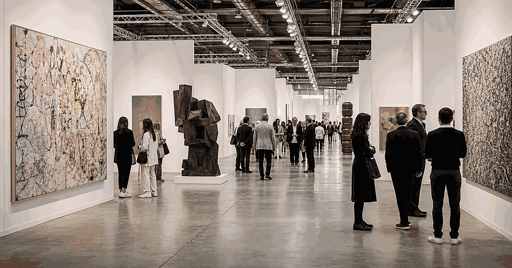
ArtBiennales, art fairs, gallery weeks and public art events.
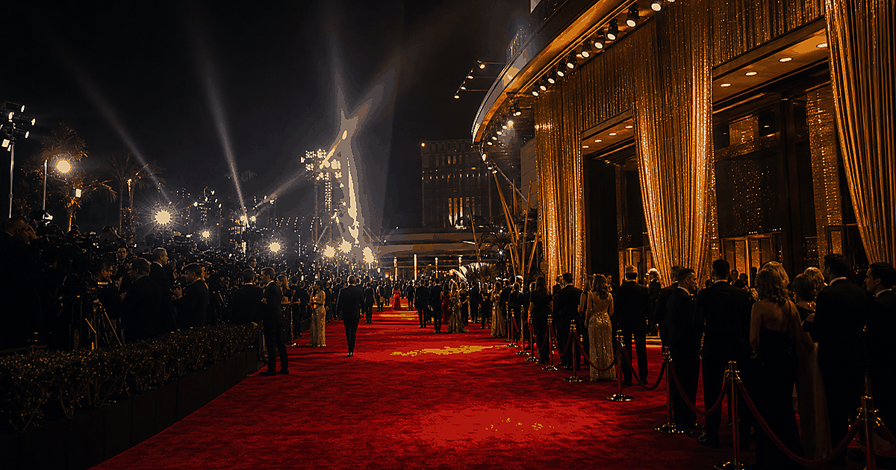
AwardsCeremonies, red carpets and awards-season travel.
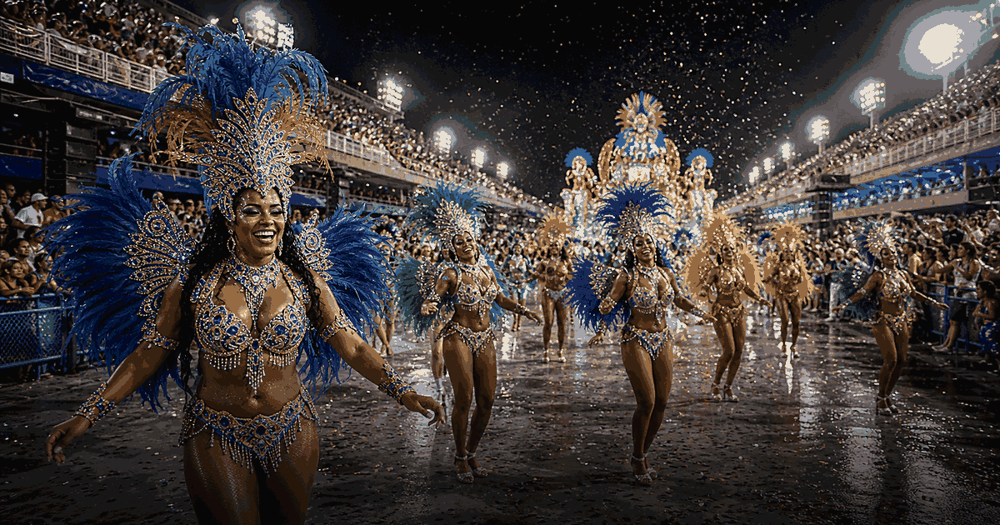
CarnivalStreet parades, masquerades and city-wide festival seasons.
FashionFashion weeks, style capitals and runway calendars.
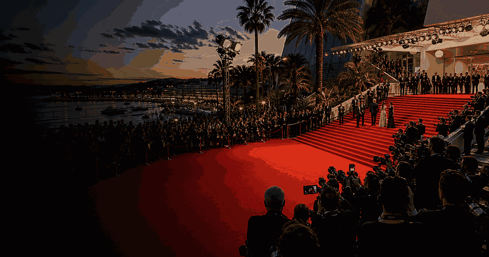
FilmFestivals, premieres and cinema cities.
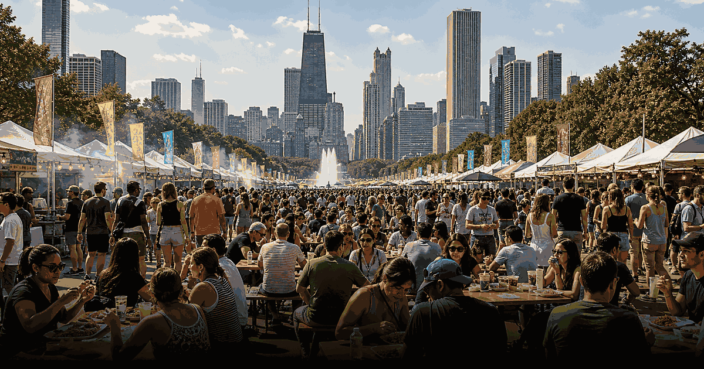
Food and DrinkFood festivals, tastings, dining weeks and drink culture.
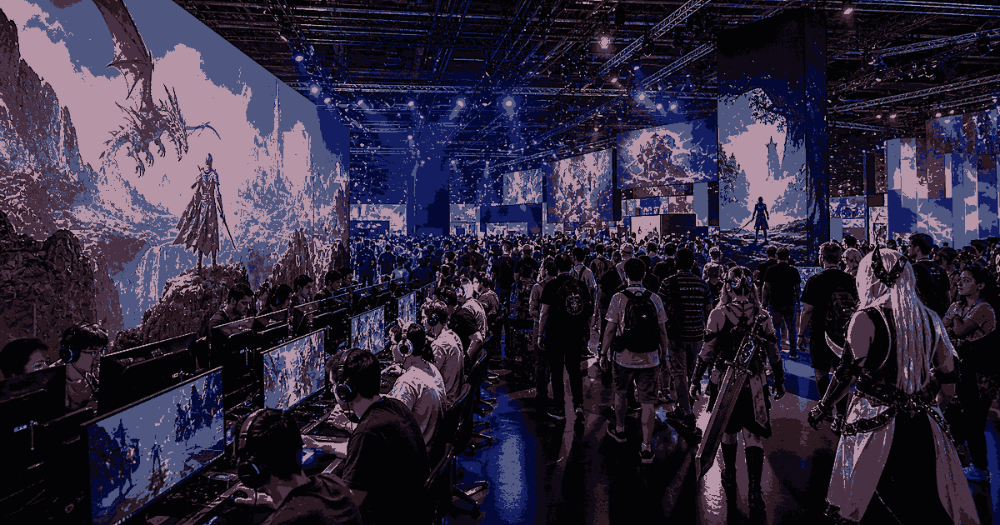
GamingGame expos, fan shows, esports stages and industry showcases.
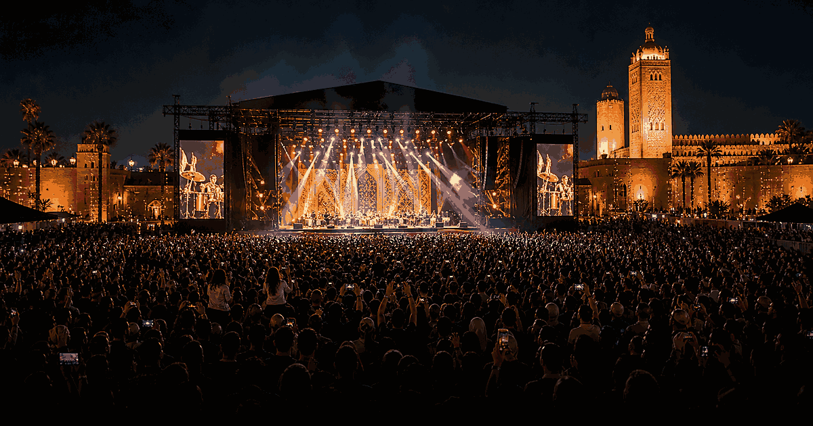
MusicConcert-led events, cultural music gatherings and live scenes.
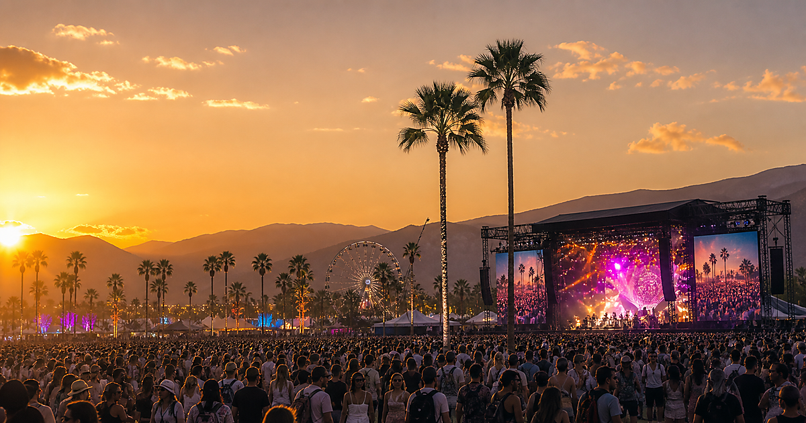
Music FestivalsFestival weekends, headline calendars and destination lineups.
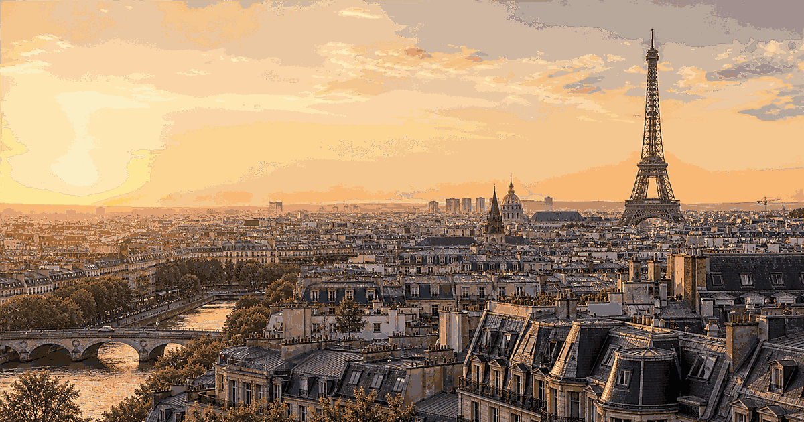
National DayPublic holidays, independence days and national celebrations.
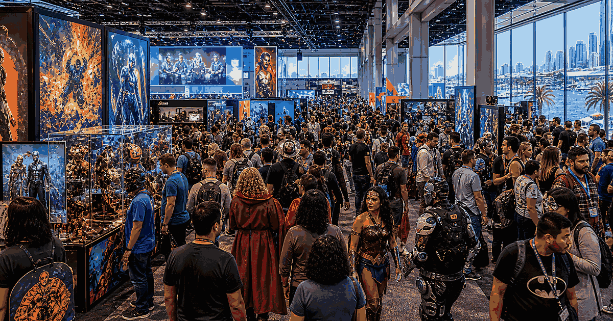
Pop CultureFan events, conventions and entertainment moments.
ReligionPilgrimages, observances and sacred festival calendars.
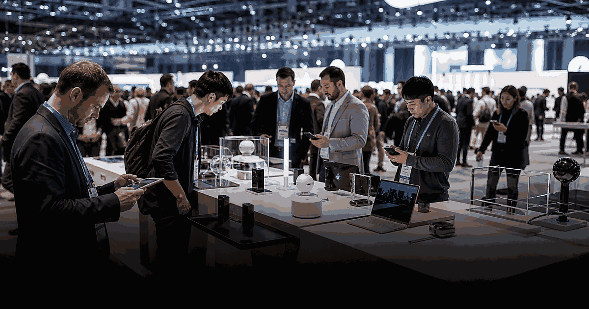
Tech EventsConferences, launches, summits and innovation weeks.
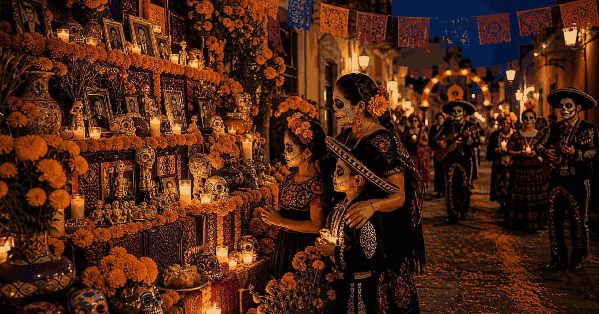
TraditionHeritage customs, seasonal rituals and local celebration days.
WildlifeMigration seasons, conservation moments and nature spectacles.
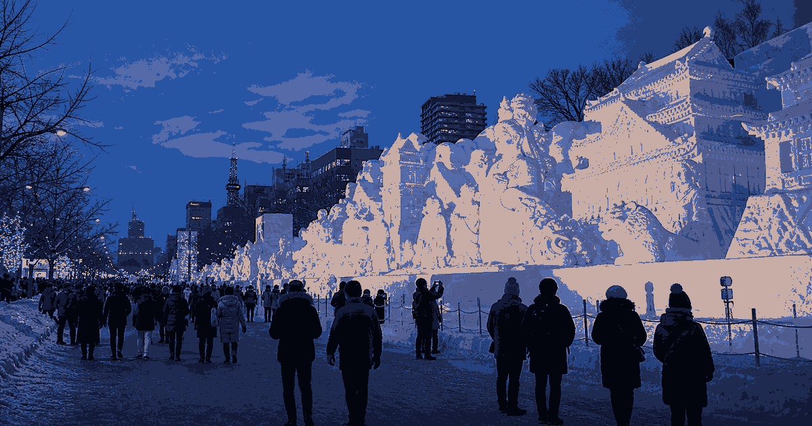
WinterSnow festivals, ice events and winter city celebrations.